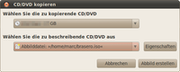
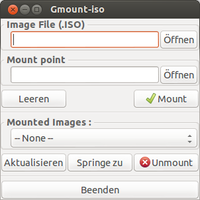
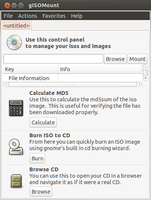
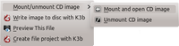

CD-Images
Dieser Artikel wurde für die folgenden Ubuntu-Versionen getestet:
Dieser Artikel ist größtenteils für alle Ubuntu-Versionen gültig.
Zum Verständnis dieses Artikels sind folgende Seiten hilfreich:
CD/DVD-Images sind Dateien, die das genaue Abbild eines optischen Datenträgers wie einer DVD oder einer CD enthalten. Diese Images lassen sich entweder auf CD/DVD brennen, auf einen USB-Stick kopieren oder als Datenträger einhängen. Im letzteren Fall befindet sich die Image-Datei auf der Festplatte, man kann jedoch auf das Image zugreifen, so als wäre die abgebildete CD eingelegt. Es existieren verschiedene Formen von Images, für die verschiedene Vorgehensweisen angeraten sind.
ISO-Images brennen¶
Die ISO-Dateien der CD-Images dürfen nicht einfach als Datei bzw. Daten-CD/-DVD gebrannt werden. Man muss immer darauf achten, das Abbild als "Image" zu brennen. Wie man ISO-Dateien brennt, kann man unter Brennprogramme nachlesen.
ISO-Images auf USB-Stick kopieren¶
Wechseldatenträger wie USB-Sticks oder SD-Karten haben den Vorteil, dass sie im Gegensatz zu normalen CDs/DVDs wiederverwendet werden können. Da seit ca. 2003 viele Rechner auch davon booten können und mit der Einführung von Hybrid-ISO-Images haben diese Datenträger die bisher üblichen optischen Medien in vielen Fällen abgelöst. Weitere Informationen liefert der Artikel Live-USB.
ISO-Dateien editieren¶
ISO Master ist ein Programm zum Erstellen und Bearbeiten von ISO-9660-Abbildern.
ISO-Dateien von CD erstellen¶
Um aus einer CD/DVD ein ISO-Image in einer Datei zu erstellen, kann man eines der verschiedenen Brennprogramme oder das Konsolenwerkzeug dd verwenden.
|  |
| Brasero |
GNOME/Ubuntu - Brasero¶
GNOME bzw. Ubuntu bringt in der Standardinstallation das Brennprogramm Brasero mit. Mit diesem lassen sich auf einfachem Weg ISO-Abbilder erzeugen. Dazu wählt man "CD/DVD kopieren" und als Ziel "Abbilddatei".
Alternativ nach dem Einbinden des Datenträgers auf dem Desktop einen  Rechtsklick auf diesen ausführen und im Menü den Punkt "CD/DVD kopieren" anwählen. Unter "Wählen Sie die zu beschreibende CD/DVD aus" für die Abbilddatei entscheiden. Unter "Eigenschaften" kann der Name festgelegt und der Speicherort ausgesucht werden. Wird nichts angegeben, erstellt Brasero das Abbild im Homeverzeichnis. Über "Abbild erstellen" wird die ISO-Datei angelegt.
Rechtsklick auf diesen ausführen und im Menü den Punkt "CD/DVD kopieren" anwählen. Unter "Wählen Sie die zu beschreibende CD/DVD aus" für die Abbilddatei entscheiden. Unter "Eigenschaften" kann der Name festgelegt und der Speicherort ausgesucht werden. Wird nichts angegeben, erstellt Brasero das Abbild im Homeverzeichnis. Über "Abbild erstellen" wird die ISO-Datei angelegt.
Hinweis:
Um Filme zu sichern, sind in der Regel vorbereitende Maßnahmen wie im Artikel DVD-Wiedergabe beschrieben erforderlich. Hierbei sind die Bestimmungen des jeweiligen Landes zu beachten. Siehe auch Kopierschutz und Video-DVD kopieren.
Lesen des Inhalts von Image-Dateien¶
Die gängigen Packprogramme können auch mit Image-Dateien umgehen. Daher genügt zum Betrachten des Inhalts ein Doppelklick auf selbiges. Dieser Weg ist insbesondere der schnellste, wenn man lediglich auf einzelne Dateien zugreifen oder diese extrahieren möchte.
Einbinden von Image-Dateien in das Dateisystem¶
Linux kann eine Image-Datei wie andere Dateisysteme in das Dateisystem einzubinden (vgl. unter Windows die dafür erforderlichen "Daemon Tools"). Da es sich nicht um ein reales Gerät handelt, wird die Datei als ein so genanntes Loop-Device eingehängt. Neben verschiedenen graphischen Tools kann man die Datei auch "von Hand" über die Kommandozeile einhängen oder sich ein entsprechendes Skript basteln/anpassen (siehe unten).
|  |  |
| Gmount-iso | gISOMount |
ISO-Images grafisch einhängen¶
Es gibt verschiedene Werkzeuge, um ISO-Dateien grafisch einzuhängen. Manche sind bereits Bestandteil einer Desktop-Umgebung, andere müssen bei Bedarf nachinstalliert werden. Neben den folgenden Programmen gibt es noch die beiden Anwendungen CDEmu und AcetoneISO.
Nautilus (GNOME)¶
ISO-Abbilder kann man ganz einfach mit einem "Rechtsklick -> mit Archiveinbinder öffnen" öffnen. Die Dateien auf der Image-Datei sind dann über Nautilus (Dateimanager) zugreifbar. Nicht in allen Anwendungen ist die Variante jedoch problemfrei, weil der vom Archiveinbinder erstellte Dateipfad (Muster: archive://file%253A%252F%252F%252Ftmp%252FIsofile.iso") von Nicht-GNOME-Programmen nicht zugreifbar ist. So kann man z.B. via Kommandozeile nicht darauf zugreifen. In diesem Fall müsste man entweder erforderliche Dateien mit dem Archiveinbinder in das Dateisystem exportieren oder man muss die Image-Datei tatsächlich mit den folgenden Werkzeugen normal einbinden.
gmountiso¶
Gmountiso ist leider nicht besonders umfangreich, aber schlank und simpel zu bedienen. Dazu wird das folgende Paket installiert [4]:
gmountiso (universe )
 mit apturl
mit apturl
Paketliste zum Kopieren:
sudo apt-get install gmountiso
sudo aptitude install gmountiso
gISOMount¶
gISOMount ist umfangreicher und muss ebenfalls nachinstalliert werden:
gisomount (universe)
mit apturl
Paketliste zum Kopieren:
sudo apt-get install gisomount
sudo aptitude install gisomount
|  |
| Servicemenü |
KDE¶
ISO-Abbilder können in Dolphin und Konqueror nach der Installation [4] des Pakets
kde-service-menu-fuseiso (universe)
mit apturl
Paketliste zum Kopieren:
sudo apt-get install kde-service-menu-fuseiso
sudo aptitude install kde-service-menu-fuseiso
über das Servicemenü ein- bzw. ausgehangen werden. Hier durch einen Rechtsklick auf das Abbild im Menü "Aktionen -> Mount/unmmount CD Image" die entsprechende Auswahl "Mount and open CD image" bzw. "Unmount CD image" treffen.
ISO-Images über die Kommandozeile einhängen¶
Das Einhängen von ISO-Images kann auch über die Kommandozeile erfolgen:
sudo mount -o loop /home/BENUTZERNAME/image.iso /mnt/temp
Der Befehl hängt die ISO-Image-Datei als sog. Loop-Device beispielhaft in das Verzeichnis /mnt/temp ein.
Optional - ISO-Images über ein Skript einbinden¶
Unter Linux gibt es kein zentrales Tool, mit dem sich verschiedene CD-Images einfach in das System einbinden lassen. Daher hat Josef Behr folgendes Skript geschrieben, welches das bei ISO9660/ISO13346(UDF)-konformen Images (*.iso, *.nrg -> s.u, ?) erfolgreich erledigt. Dazu den folgenden Quelltext in eine leere Datei als mountiso speichern [2]:
1 2 3 4 5 6 7 8 9 10 11 12 13 14 15 16 17 18 19 20 21 22 23 24 25 26 27 28 29 30 31 32 33 34 35 36 37 38 39 40 41 42 43 44 45 46 47 48 49 50 51 52 53 | #!/bin/bash # # Copyright (c) 2005 by dejot <Josef Behr> # Modified for ISO13346(UDF) Images by overlord8k8 (ubuntuusers) # Distributed under the GPL version 2 # # mountiso - Mount iso9660/ISO13346(UDF)-Images into directoy ## Das Verzeichnis, in das gemounted wird. !! Schreibrechte benötigt !! mountdir="${HOME}/mountiso" ## Alternative: "/media" (dann erscheint Image auf Desktop) if [ ! -d $mountdir ]; then echo "Directory to mount in ($mountdir/) doesn't exist. I'll create it." mkdir $mountdir fi if [ "$1" = "" ]; then echo "Usage:" echo "Go to the directoy with the image in it. Then type:" echo "mountiso name-of-image-file" echo "You will find the content of the image in $mountdir/name-of-image-file/" elif [ "$1" = "-u" ]; then if [ "$2" = "" ]; then echo "No image for unmounting specified." echo "Please specify by the name of the directory in $mountdir" else if [ -d $mountdir/$2 ]; then sudo umount $mountdir/$2 rmdir $mountdir/$2 echo "Ready." else echo "This image isn't yet mounted in $mountdir" fi fi else if [ ! -e "$1" ]; then echo "Image file not found. Aborting." else if [ ! -d $mountdir/$1 ]; then echo "Creating directory: $mountdir/$1/" mkdir $mountdir/$1 echo "Ready." fi echo "Mounting ..." sudo mount -o loop -t auto $1 $mountdir/$1 echo "If no errors were displayed your image has been successfully mounted." echo "You can access the content now in $mountdir/$1/" fi fi |
Die Datei muss ausführbar gemacht und an einen Ort kopiert werden, der im $PATH des Benutzers ist. Dazu bietet sich ~/bin/ oder /usr/local/bin/ an. Man öffnet also ein Terminal [1] und gibt dort:
chmod 755 mountiso sudo cp mountiso /usr/local/bin
ein.
Das Skript kann natürlich ganz nach Belieben angepasst werden. Der Pfad hinter "mountdir=" stellt das Verzeichnis dar, in das die Images eingebunden werden. Für dieses Verzeichnis werden Schreibrechte benötigt.
Um die Image-Datei einzubinden, gibt man in einem Terminalfenster [1] in dem Verzeichnis, in dem das Image liegt:
mountiso image.iso
ein. "image.iso" stellt hier den Dateinamen des Images dar.
Wieder ausgehängt (unmount) wird so:
mountiso -u image.iso
Zum Aushängen muss man sich nicht mehr im Verzeichnis mit dem Image selber befinden.
NRG-Images einbinden¶
Hinweis:
Alternativ kann man ein NRG-Image auch in ein ISO-Image umwandeln.
Diese Dateien können mit diesem Skript zunächst nicht eingebunden werden. Abhilfe verschafft man sich, indem man in einem Editor [2] die Zeile mit
sudo mount -o loop -t auto $1 $mountdir/$1
durch
sudo mount -o loop,offset=307200 -t iso9660 $1 $mountdir/$1
ersetzt. Die Datei speichert man dann am besten unter einem neuen Namen, z.B. mountnero ab. Auch die neue Datei muss ausführbar gemacht werden. So hat man für beide Image-Formate einen eigenen Befehl zur Verfügung.
Optional - Alternatives Skript zum Einbinden¶
Das folgende Skript erledigt die Arbeit des obigen mehr in der Art wie der mount-Befehl selbst und bietet zudem noch einige Features, so kann z.B. ein anderer Einhängepunkt als Standard per Befehl angegeben werden (dieser wird dann auch gespeichert) und das Skript enthält eine Anzeige, welche ISO-Images eingebunden sind.
1 2 3 4 5 6 7 8 9 10 11 12 13 14 15 16 17 18 19 20 21 22 23 24 25 26 27 28 29 30 31 32 33 34 35 36 37 38 39 40 41 42 43 44 45 46 47 48 49 50 51 52 53 54 55 56 57 58 59 60 61 62 63 64 65 66 67 68 69 70 71 72 73 74 75 76 77 78 79 80 81 82 83 84 85 86 87 88 89 90 91 92 93 94 95 96 97 98 99 100 101 102 103 104 | #!/bin/bash # (c) 2006 by Julian Fleischer aka Warhog # License: GPLv2 (See http://www.gnu.org/licenses/gpl.html) # visit http://www.warhog.info/ mountiso_version="2006-10-18" mountiso_cfg_file="/etc/mountiso.default" mountiso_default_mountpoint="/media/cdrom0" do_mount() { if [ ! -e "$1" ]; then echo "Image file not found, aborting." else if [ "$2" == "ro" ]; then param="-r " fi mount $param -o loop -t iso9660 "$1" "$where" fi } show_help() { echo "mountiso [-w] <what> [<where>]" echo " mounts an iso9660-image <what> to mountpoint <where>." echo "If no mountpoint is specified, $default_mountpoint will be assumed." echo "If no arguments are given, all mounted iso9660 images will be listed." echo " Options:" echo " -w, --writable boot the image writable, default is readonly" echo " Alternatives:" echo " -u <where> unmounts the image at <where>" echo " -d, --default print the default mount point" echo " -d <where> set the default mount point to <where>" echo " -c, --clean remove the configuration-file (if there is any)" echo " -v, --version print version information" echo " -h, --help show this message" } read_config() { default_mountpoint=$mountiso_default_mountpoint if [ -e "$mountiso_cfg_file" ]; then default_mountpoint="`cat $mountiso_cfg_file`" fi where="$1" if [ ! -e "$where" ]; then where="$default_mountpoint" fi } save_config() { echo "$1" > "$mountiso_cfg_file" } do_execute() { read_config "$2" case $1 in "") mount | grep iso9660 ;; "--help"|"-h") show_help ;; "-v"|"--version") echo $mountiso_version ;; "-d"|"--default") if [ "$2" == "" ]; then echo $default_mountpoint else default_mountpoint="$2"; save_config "$default_mountpoint" fi ;; "-u"|"--umount"|"--unmount") umount "$where" ;; "-c"|"--clean") unlink "$mountiso_cfg_file" ;; "-w"|"--writable"|"--writeable") read_config "$3" do_mount "$2" rw ;; *) do_mount "$1" ro ;; esac } do_execute "$1" "$2" "$3" |
Skript installieren¶
Das Skript mit Rootrechten als /usr/local/bin/mountiso abspeichern und dann für alle ausführbar machen.
Features des Skripts¶
Vielen ist daran gelegen, ISO-Images einzubinden, um z.B. mit Wine Spiele schneller spielen zu können (da Festplatten-Images schneller gelesen werden können als CDs). In diesem Fall ist es sinnvoll, das ISO-Image direkt an die Stelle des CD-ROM-Laufwerks einzubinden. mountiso hat grob die selbe Syntax wie mount, es wird also wie folgt benutzt:
sudo mountiso IMAGE.ISO MOUNT-PUNKT
Ohne Argumente gibt mountiso eine Liste der gemounteten ISO-Images an.
Wird MOUNT-PUNKT nicht angegeben, so wird der eingestellte Default-Mount-Punkt benutzt. Nach der Installation ist dies /media/cdrom0. Wem dies nicht gefällt, kann dies wie folgt ändern:
sudo mountiso -d NEUER_STANDARD_MOUNT-PUNKT
mountiso speichert diesen neuen Standard-Mount-Punkt in der Datei /etc/mountiso.default. Diese Datei kann mittels
sudo mountiso -c
entfernt werden. Gibt man den Parameter -d ohne weitere Argumente an, wird der aktuelle Standard-Mount-Punkt ausgegeben.
Um Images wieder auszuhängen, nutzt der Befehl folgende Syntax:
sudo mountiso -u IMAGE-DATEI
Ist das Image am Standard-Einhängepunkt eingebunden, kann das letzte Argument weggelassen werden. Ist man sich nicht sicher, wo man das Image eingehängt hat, genügt die Eingabe von mountiso ohne Parameter, um eine Liste aller Image-Einbindungen zu bekommen.
Beispiele¶
Default-Mountpunkt anzeigen:
sudo mountiso -d
CD-Image starcraft.iso an Standard-Mountpunkt einbinden:
sudo mountiso starcraft.iso
CD-Image broodwar.iso nach /media/cdrom1 einbinden:
sudo mountiso broodwar.iso /media/cdrom1
Liste aller Einbindungen anzeigen:
sudo mountiso
/<...>/starcraft.iso on /media/cdrom0 type iso9660 (ro,loop=/dev/loop0) /<...>/broodwar.iso on /media/cdrom1 type iso9660 (ro,loop=/dev/loop1)
Standard-Mountpunkt wieder freigeben:
sudo mountiso -u
Image von /media/cdrom1 wieder aushängen:
sudo mountiso -u /media/cdrom1
Andere Image-Formate¶
Neben dem ISO-Format gibt es weitere, z.T. proprietäre Image-Formate, die man vor allem in der Windows-Welt oft findet. Wer diese auch unter Ubuntu einbinden möchte, hat zwei Möglichkeiten:
In ISO-Images umwandeln
Alternative Programme zum Einbinden
In ISO-Images umwandeln¶
Man kann einige andere Image-Formate in das ISO-Format umwandeln. Dazu muss man erst das zugehörige Paket installieren und kann dann mit dem Befehl das Image konvertieren.
| Image-Format | Paket | Befehl |
| allgemein | iat (universe) | iat QUELLDATEI ZIELDATEI |
| bin/cue | bchunk (universe) | bchunk QUELLDATEI.bin QUELLDATEI.cue ZIELDATEI.iso |
| nrg | nrg4iso  | ./nrg4iso QUELLDATEI.nrg ZIELDATEI.iso |
| nrg | nrg2iso (universe) (veraltet, besser: nrg4iso, iat) | nrg2iso QUELLDATEI.nrg ZIELDATEI.iso |
| mdf | iat (universe) (oder mdf2iso, gleiche Syntax) | iat QUELLDATEI.mdf ZIELDATEI.iso |
| img/ccd/sub | ccd2iso (universe) | ccd2iso QUELLDATEI.img ZIELDATEI.iso |
| daa | PowerISO for Linux | ./poweriso convert QUELLDATEI.daa -o ZIELDATEI.iso -ot iso |
Hinweis:
Für die normalerweise mit der Dateiendung .bin versehenen Binärdaten ist oft auch die Endung .img gebräuchlich. Also nicht wundern, wenn es eine zugehörige .cue-Datei gibt, dann handelt es sich meistens um ein BIN-Image.
Alternative Programme zum Einbinden¶
Wenn man sich nicht die Mühe machen möchte, jedes Image umzuwandeln, kann man sich auch ein Programm installieren, das diese auch einbinden kann. Mit CDEmu lassen sich nahezu alle Formate einbinden. AcetoneISO ist auch schon recht ausgereift, beherrscht aber nicht alle Formate.
- Erstellt mit Inyoka
-
 2004 – 2017 ubuntuusers.de • Einige Rechte vorbehalten
2004 – 2017 ubuntuusers.de • Einige Rechte vorbehalten
Lizenz • Kontakt • Datenschutz • Impressum • Serverstatus -
Serverhousing gespendet von